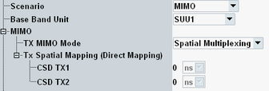

TX MIMO Settings
If the "MIMO" scenario is selected, the WLAN signaling application switches to AP mode, the "Operation Mode" setting disappears and an additional MIMO branch is displayed.
For background information, see "MIMO Scenario".

MIMO settings
Selects the MIMO transmission mode: spatial multiplexing, TX diversity or STBC.
Remote command:Cyclic shift diversity (CSD) increases the frequency selectivity at the receiver. The signals are transmitted by the individual antennas with a time delay. Because CSD introduces additional diversity components, it is for example useful as an addition to spatial multiplexing.
CSD can be configured for spatial multiplexing and STBC.
Remote command: